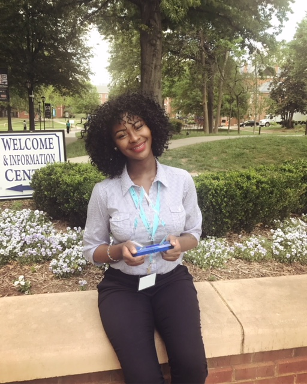

The Black Twitter Research Team first presented at Spelman College's Research Day in the Spring of 2016. We went on to continue our research initiative, and to present at the 2017 Research Day where our team won First Place for Computer Science!! In the Spring of 2018, we will be presenting our research findings along with our tools, maps, and other features on this site. Follow the timeline for details! * Click the posters for better viewing*
Our first presentation at Research Day focused on showcasing how we collected our data. In short, we leveraged the Twitter API to grab or "stream" tweets into text files. We streamed tweets based on what are known as Blacktags within Black Twitter. Notable Blacktags from the 2016 Oscars Awards were #OscarsSoWhite and #chrisrock.
We also streamed Tweets for the Grammys Awards to get an estimate for the most popular Blacktags tweets during the show.
We detailed our process for collecting and sorting the collected tweets, and showed tables of the most popular Blacktags from our tweet files. We noted examples of "noise" tweets, as these were tweets that needed to be filtered out. Result: 3rd Place for Computer Science!
Spelman College's Research Day now requires that teams present a poster for each person, so there are two posters for this year's research. The first presented by Takeria Blunt delves into making sense of the tweets that were collected in both the 2016 & 2017 Oscars Awards. Using Word Clouds and word frequency, the objective is to determine the collective opinion towards the topic.
The Python coding language and associated libraries were used to create word clouds from tweet files, then a program was written in Python to determine if the highest frequency word was actually considered relevant.
Takeria presented the various Word Clouds, which were grouped by year (2016 & 2017) and Language to represent the fact that members of Black Twitter are diverse, and that this poses a challenge when analyzing the meaning behind thousands of tweets. Result: 1st Place for Computer Science!
The 2017 Academy Awards provide an opportunity to gather and analyze a large number of tweets that would be potentially political and or controversial. Using the Jupyter notebook platform, we can better visualize the data leveraging various API libraries existing such as pandas, plot.ly, json and Django framework.
Plot.ly allows us to compare the highly used hashtags and keywords for the Oscars 2016 and 2017 through two separate interactive U.S. maps. These geographical locations provide insights into how a user’s location can correlate to the social context of their tweets.
Tayloir presented two U.S. maps that visualized the hot spots of where Black Twitter members were tweeting from during the Oscars Awards. Comparing the 2016 Awards to the 2017 Awards was the focus, depicting differences in the locations and frequency of certain tweets. Result: 1st Place for Computer Science!
We'll present our tweet map and tweet analysis tools!